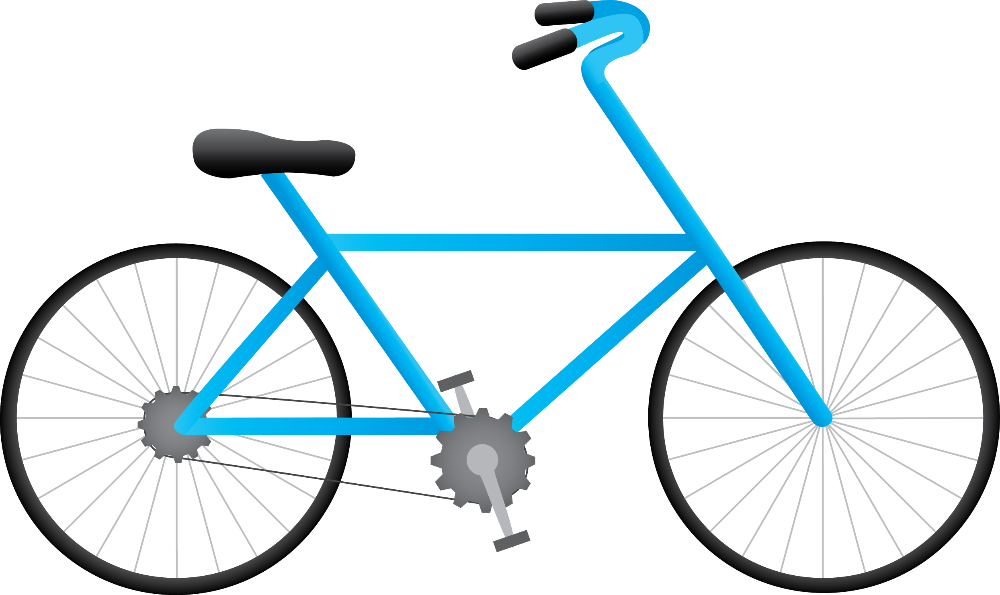
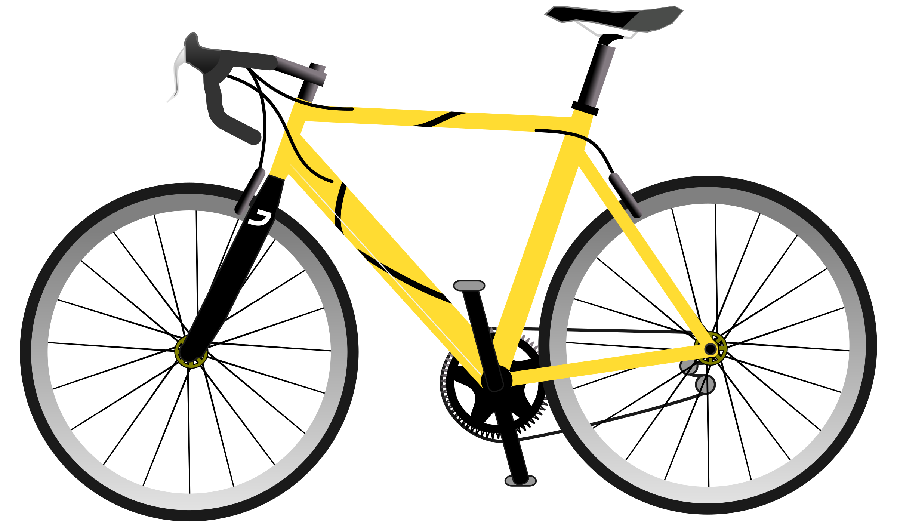
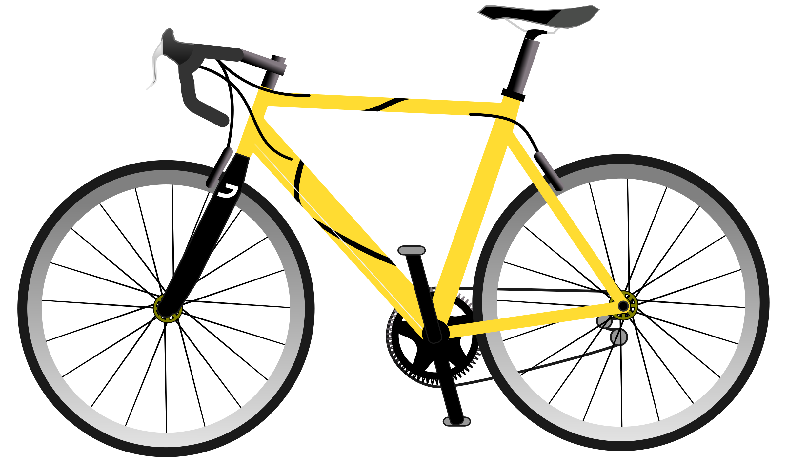
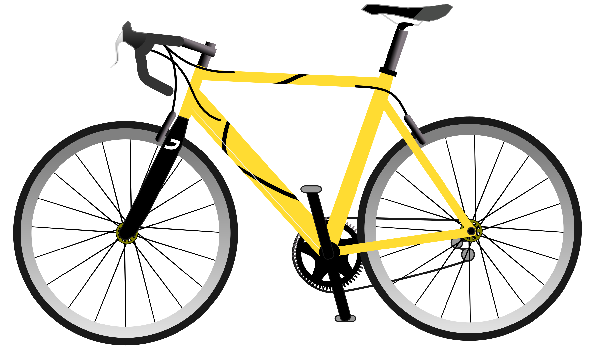

Bike
Bicycles, often referred to as bikes, are versatile and efficient modes of transportation that have stood the test of time. Dating back to the 19th century, these two-wheeled wonders have evolved from simple contraptions to sleek, high-tech machines, catering to a wide range of enthusiasts, from casual riders to competitive cyclists.

 

